library(tidyverse) # enthält ggplot2
library(haven)
library(sjmisc)
library(naniar)
df <- read_csv("assets/data/datensatz_workshop.csv")
df <- df |>
mutate(
# ── Skalenwerte (Distress & Soziale Ungleichheit) ──────────────────
# Invertierte Items umkodieren (1=Immer → 5=Nie, hohe Werte = mehr Distress)
hs04_r = rec(hs04, rec = "rev"), # Hetze/Zeitdruck
hs05_r = rec(hs05, rec = "rev"), # Niedergeschlagen
hs09_r = rec(hs09, rec = "rev"), # Einsam
# Distress-Summenwert: 5 (kein Distress) bis 25 (hoher Distress)
distress = hs04_r + hs05_r + hs06 + hs07 + hs09_r,
# Soziale Ungleichheit: alle Items invertieren (hohe Werte = Akzeptanz)
im17_r = 5 - im17,
im18_r = 5 - im18,
im19_r = 5 - im19,
im20_r = 5 - im20,
im21_r = 5 - im21,
soz_u = im17_r + im18_r + im19_r + im20_r + im21_r,
# ── Faktoren ──────────────────────────────────────────────────────
geschlecht = factor(sex,
levels = c(1, 2),
labels = c("Männlich", "Weiblich")
),
# Altersgruppen
altersgruppe = factor(agec,
levels = 1:6,
labels = c("18–29", "30–44", "45–59", "60–74", "75–89", "90+")
),
# Bildungsniveau (ISCED 1997)
bildung = factor(isced97,
levels = 1:6,
labels = c("Primär", "Niedrig", "Mittel", "Post-Sek.", "Tertiär I", "Tertiär II")
),
# Erwerbsstatus
erwerbsstatus = factor(work,
levels = 1:4,
labels = c("Vollzeit", "Teilzeit", "Nebenher", "Nicht erwerb.")
),
# Wohnort (Selbstbeschreibung)
wohnort = factor(gs01,
levels = 1:5,
labels = c("Großstadt", "Vorort", "Mittel-/Kleinstadt", "Dorf", "Einzelhaus")
),
# Erhebungsgebiet Ost/West
gebiet = factor(
eastwest,
levels = 1:2,
labels = c("West", "Ost")
),
# Subjektiver allgemeiner Gesundheitszustand
gesundheit = factor(hs01,
levels = 1:5,
labels = c("Sehr gut", "Gut", "Zufriedenstellend", "Weniger gut", "Schlecht"),
ordered = TRUE
),
# Subjektive Schichteinstufung
schicht = factor(id02,
levels = 1:5,
labels = c("Unterschicht", "Arbeiterschicht", "Mittelschicht",
"Ob. Mittelschicht", "Oberschicht"),
ordered = TRUE
),
# Lebenszufriedenheit: negative Codes → NA
lebenszuf = ls01,
# Sozioökonomischer Index des beruflichen Status (aus Einkommen, Bildung und Beruf)
sei = isei08
) |>
drop_na(distress, soz_u, geschlecht)Datenvisualisierung mit ggplot2 – Tag 2
Facets, Statistics, Coordinates & Theme
Willkommen zurück 👋
Wir starten mit einem kurzen Recap von Tag 1 und klären offene Fragen.
Gestern haben wir die ersten drei Layer der Grammar of Graphics kennengelernt.
Heute arbeiten wir uns die restlichen vier Layer hoch:
| Layer | Tag | Status |
|---|---|---|
| 🗂️ Data | Tag 1 | ✅ |
| 🎨 Aesthetics | Tag 1 | ✅ |
| 📐 Geometries | Tag 1 | ✅ |
| 🔲 Facets | Tag 2 | 👈 heute |
| 📊 Statistics | Tag 2 | 👈 heute |
| 📏 Coordinates | Tag 2 | 👈 heute |
| 🖌️ Theme | Tag 2 | 👈 heute |
TipRecap-Fragen
- Was ist die „Grammar of Graphics” und welche sieben Schichten hat sie?
- Was ist der Unterschied zwischen
geom_bar()undgeom_col()? - Was ist der Unterschied zwischen
colorinnerhalb und außerhalb vonaes()? - Was ist der Unterschied zwischen
colorundfill? - Wofür brauchen wir
labs()?
Bevor wir starten, laden wir wieder alle Pakete und den Datensatz, falls nicht schon geschehen oder machen einfach da weiter, wo wir gestern aufgehört haben:
🔲 Layer 4: Faceting
Faceting ermöglicht es, dieselbe Grafik für verschiedene Gruppen nebeneinander zu zeichnen.
So lassen sich Muster zwischen Gruppen direkt vergleichen.
ImportantDie zwei Faceting-Funktionen
facet_wrap(~ Variable)→ Panels werden in einer flexiblen Reihe/Spalte angeordnetfacet_grid(Zeile ~ Spalte)→ Panels werden in einem starren Raster angeordnet
facet_wrap()
ggplot(data = df |> filter(!is.na(geschlecht) & !is.na(distress)),
aes(x = distress)) +
geom_histogram(binwidth = 2, fill = "steelblue", color = "white") +
facet_wrap(~ geschlecht) +
labs(
title = "Verteilung von Distress nach Geschlecht",
x = "Distress-Score",
y = "Häufigkeit"
) 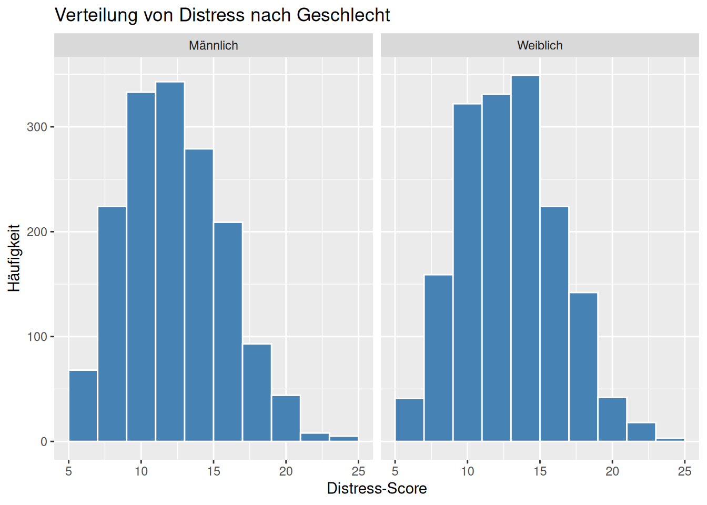
NoteNützliche Argumente für
facet_wrap()
ncol = 2→ Anzahl der Spalten festlegenscales = "free_x"/"free_y"/"free"→ Achsen pro Panel frei skalierenlabeller = label_both→ zeigt auch den Variablennamen im Panel-Titel
facet_grid()
facet_grid() erstellt ein zweidimensionales Raster – eine Variable für Zeilen, eine für Spalten.
df |> filter(!is.na(altersgruppe)) |>
ggplot(aes(x = distress)) +
geom_histogram(binwidth = 2, fill = "steelblue", color = "white") +
facet_grid(altersgruppe ~ geschlecht) +
labs(
title = "Distress nach Altersgruppe und Geschlecht",
x = "Distress-Score",
y = "Häufigkeit"
)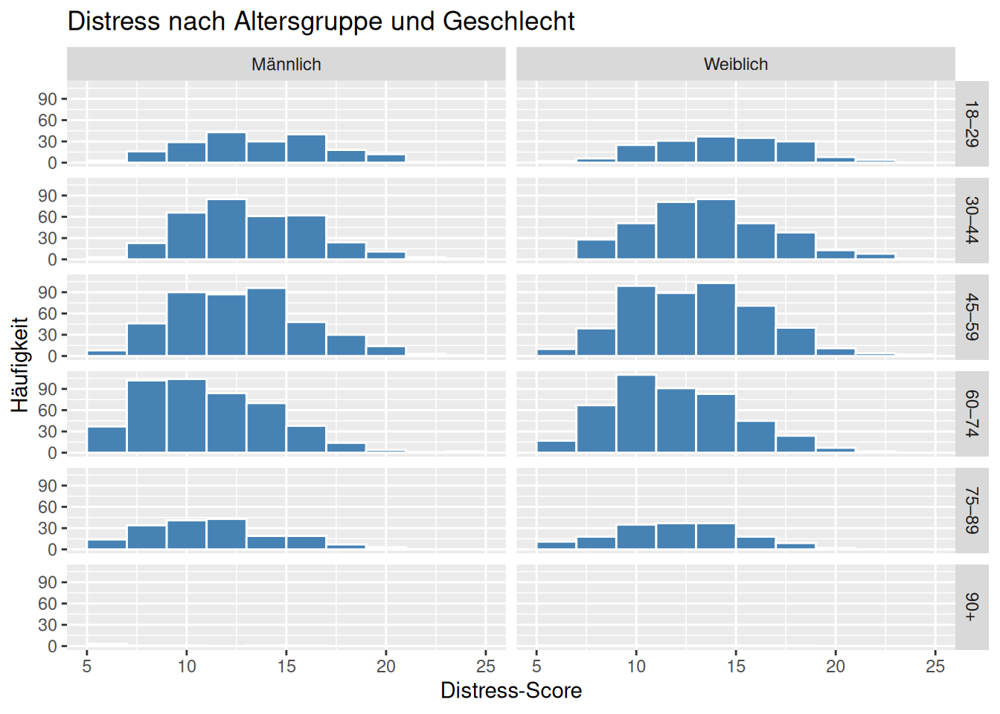
Übung
Erstelle ein facettiertes Streudiagramm:
- Nutze
ageauf der x-Achse undsoz_uauf der y-Achse - Facettiere nach
bildungmitfacet_wrap() - Füge eine Regressionslinie hinzu (
geom_smooth(method = "lm", se = FALSE)) - Füge die passenden
labs()hinzu (Titel, Achsenbeschriftungen, Caption)
TipLösung
ggplot(data = df |> filter(!is.na(bildung) & !is.na(soz_u)),
aes(x = age, y = soz_u)) +
geom_point(alpha = 0.3, color = "steelblue") +
geom_smooth(method = "lm", se = FALSE, color = "darkred") +
facet_wrap(~ bildung, ncol = 3) +
labs(
title = "Soziale Ungleichheit und Alter nach Bildungsniveau",
x = "Alter (in Jahren)",
y = "Einstellung zu sozialer Ungleichheit",
caption = "Eigene Darstellung | Workshop-Datensatz"
)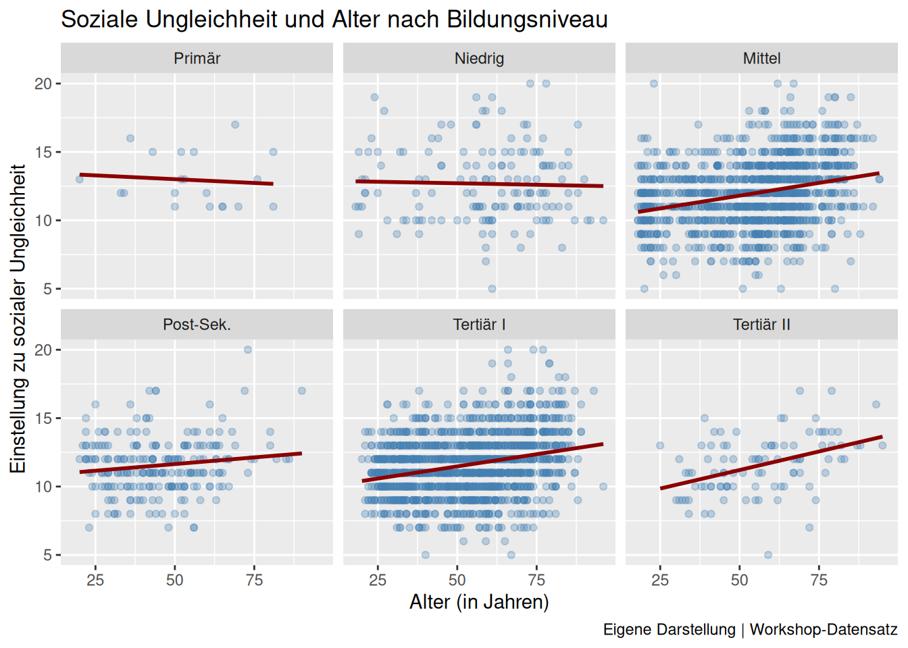
📊 Layer 5: Statistics
Der Layer Statistics beschreibt statistische Transformationen, die ggplot2 auf die Rohdaten anwendet, bevor sie gezeichnet werden.
Viele Geome wenden bereits intern eine statistische Transformation an – oft ohne dass wir es bemerken:
NoteGeome und ihre versteckten Stats
| Geom | Interne Transformation |
|---|---|
geom_histogram() |
stat_bin() – zählt Werte pro Klasse |
geom_bar() |
stat_count() – zählt Häufigkeiten |
geom_boxplot() |
stat_boxplot() – berechnet Quartile |
geom_smooth() |
stat_smooth() – berechnet Trendlinie |
geom_point() |
stat_identity() – keine Transformation |
stat_summary() – Kennwerte direkt in der Grafik
Mit stat_summary() können wir statistische Kennwerte direkt in eine Grafik einzeichnen –
z. B. Mittelwerte, Konfidenzintervalle oder Standardfehler.
ggplot(data = df, aes(x = geschlecht, y = distress)) +
stat_summary(fun = mean, geom = "point", size = 4, color = "darkred") +
stat_summary(fun.data = mean_se, geom = "errorbar", width = 0.2, color = "darkred") +
labs(
title = "Mittlerer Distress nach Geschlecht (mit Standardfehler)",
x = "Geschlecht",
y = "Distress-Score (Mittelwert ± SE)",
caption = "Eigene Darstellung | Workshop-Datensatz"
)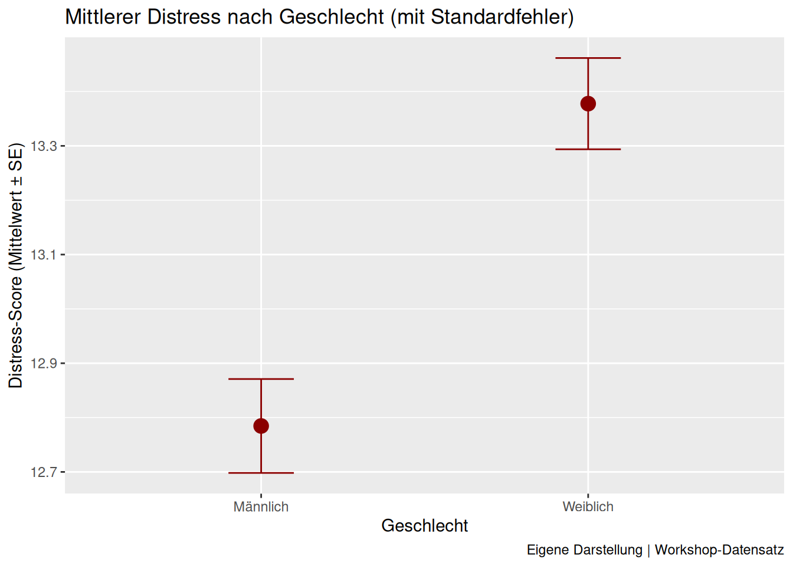
Note
stat_summary() – Wichtige Argumente
| Argument | Funktion |
|---|---|
fun |
Funktion für den Punktschätzer (z. B. mean, median) |
fun.data |
Funktion für Punkt + Intervall (z. B. mean_se, mean_cl_boot) |
geom |
Wie wird der Kennwert dargestellt? ("point", "errorbar", "bar", "line") |
Boxplot + Mittelwert kombiniert
ggplot(data = df, aes(x = geschlecht, y = distress, fill = geschlecht)) +
geom_boxplot(alpha = 0.5, outlier.shape = NA) +
stat_summary(fun = mean, geom = "point",
shape = 23, size = 3, fill = "white", color = "black") +
scale_fill_brewer(palette = "Set2") +
labs(
title = "Distress nach Geschlecht",
subtitle = "Box = Median/IQR, Raute = Mittelwert",
x = "Geschlecht", y = "Distress-Score", fill = "Geschlecht"
)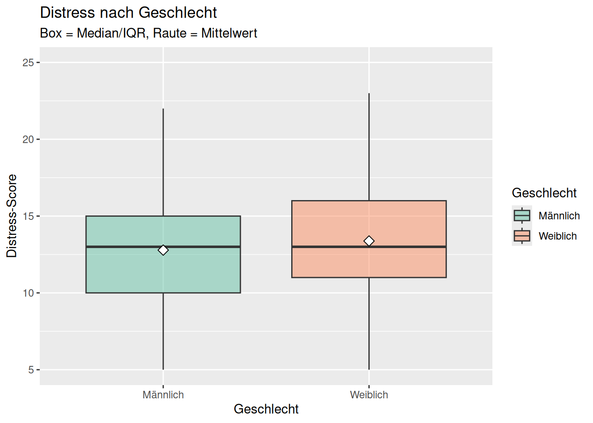
Übung
Erstelle einen Plot mit stat_summary():
- Nutze
geschlechtauf der x-Achse undsoz_uauf der y-Achse - Zeige den Mittelwert als Punkt (
fun = mean,geom = "point") - Füge Fehlerbalken (Standardfehler) hinzu (
fun.data = mean_se,geom = "errorbar") - Füge die passenden
labs()hinzu (Titel, Achsenbeschriftungen, Caption)
TipLösung
ggplot(data = df, aes(x = geschlecht, y = soz_u, color = geschlecht)) +
stat_summary(fun = mean, geom = "point", size = 4) +
stat_summary(fun.data = mean_se, geom = "errorbar", width = 0.25) +
scale_color_brewer(palette = "Set2") +
labs(
title = "Einstellung zu sozialer Ungleichheit nach Geschlecht",
subtitle = "Mittelwert ± Standardfehler",
x = "Geschlecht",
y = "Soziale Ungleichheit (Summenwert)",
color = "Geschlecht",
caption = "Eigene Darstellung | Workshop-Datensatz"
) 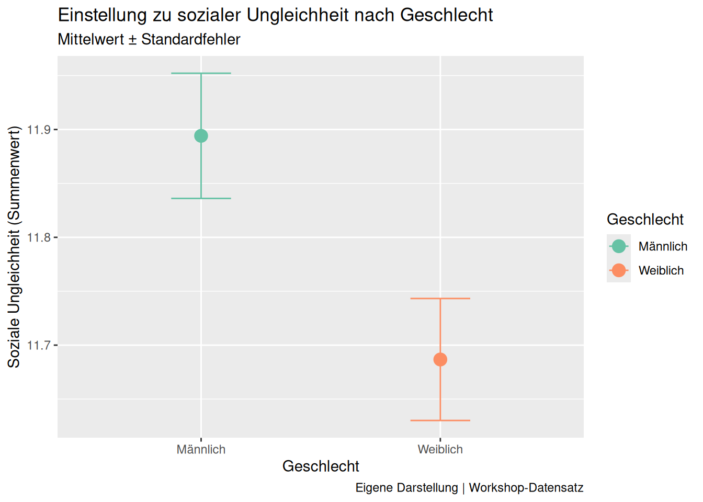
📏 Layer 6: Coordinates
Der Layer Coordinates legt fest, in welchem Koordinatensystem die Grafik dargestellt wird
und wie die Achsen skaliert oder transformiert werden.
Standardmäßig verwendet ggplot2 das kartesische Koordinatensystem (coord_cartesian()).
Für die meisten Grafiken müssen wir diese Schicht nicht explizit setzen – aber sie bietet nützliche Werkzeuge zur Achsenanpassung.
Achsenlimits setzen – coord_cartesian()
ggplot(data = df, aes(x = distress)) +
geom_histogram(binwidth = 2, fill = "steelblue", color = "white") +
coord_cartesian(xlim = c(5, 25)) +
labs(title = "Distress-Score (nur Bereich 5–25)", x = "Distress", y = "Häufigkeit")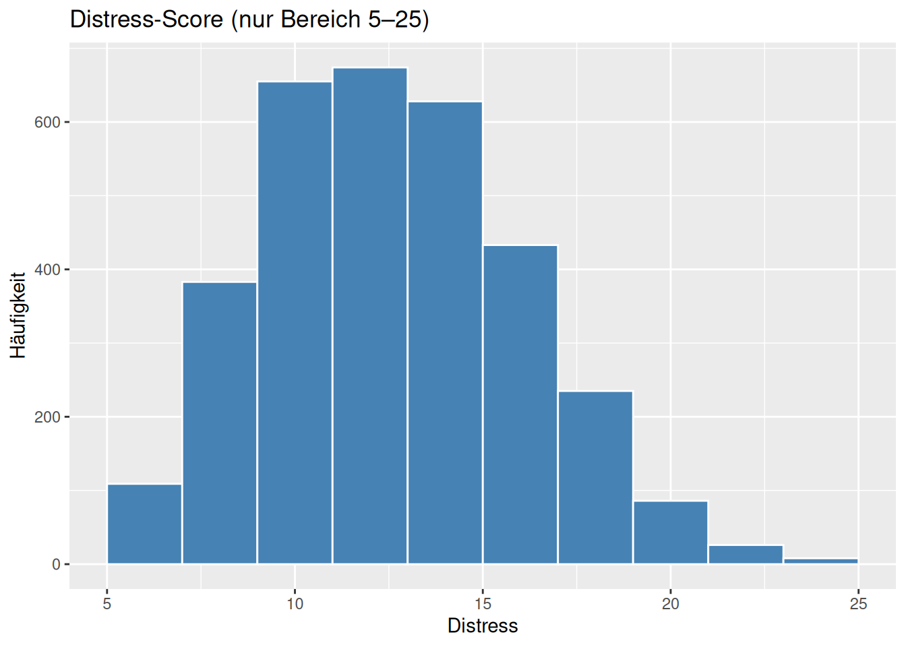
Warning
coord_cartesian() vs. xlim() / ylim()
coord_cartesian(xlim = ...)→ zoomt in den Bereich, alle Daten bleiben erhaltenxlim()/scale_x_continuous(limits = ...)→ entfernt Datenpunkte außerhalb des Bereichs
👉 Für Boxplots und geom_smooth() immer coord_cartesian() bevorzugen,
damit die statistischen Berechnungen auf allen Daten basieren.
Achsen umdrehen – coord_flip()
ggplot(data = df, aes(x = bildung)) +
geom_bar(fill = "steelblue") +
coord_flip() +
labs(title = "Bildungsniveau der Befragten", x = NULL, y = "Häufigkeit") 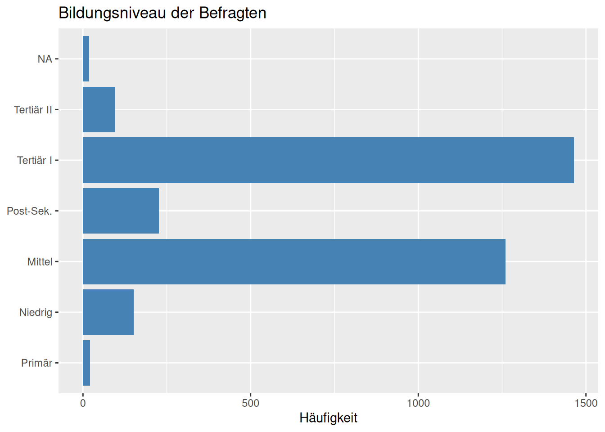
Tip
coord_flip() ist besonders praktisch bei Balkendiagrammen mit langen Kategorienamen – die Beschriftungen auf der y-Achse sind horizontal und damit leichter lesbar.
Achsentransformation – scale_x_log10()
Mit scale_x_log10() oder scale_y_log10() können Achsen logarithmisch skaliert werden – sinnvoll bei stark rechtsschiefen Verteilungen:
ggplot(data = df, aes(x = distress)) +
geom_histogram(binwidth = 0.1, fill = "steelblue", color = "white") +
scale_x_log10() +
labs(
title = "Distress-Score (log-skaliert)",
x = "Distress (log10)",
y = "Häufigkeit",
caption = "Hinweis: log10-Transformation der x-Achse"
)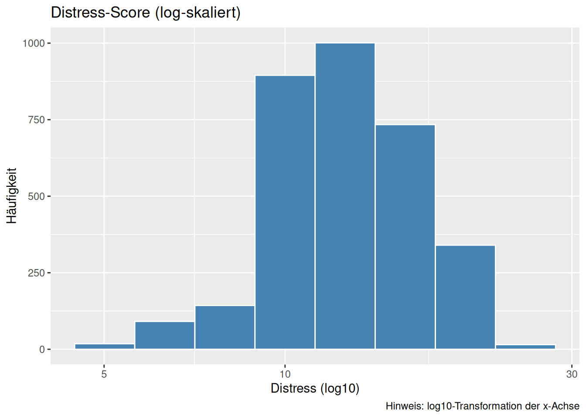
Tortendiagramm – coord_polar()
Tortendiagramme sind in der wissenschaftlichen Praxis wenig empfohlen – sie machen Proportionen schwerer vergleichbar als Balkendiagramme. Trotzdem kommen sie in Berichten und Präsentationen vor.
In ggplot2 entsteht ein Tortendiagramm aus einem geom_bar() mit einem Trick: coord_polar(theta = "y") „wickelt” einen gestapelten Balken zu einem Kreis.
df |>
count(geschlecht) |>
mutate(anteil = n / sum(n),
label = paste0(geschlecht, "\n", scales::percent(anteil, accuracy = 1))) |>
ggplot(aes(x = "", y = anteil, fill = geschlecht)) +
geom_col(color = "white", linewidth = 0.5) +
coord_polar(theta = "y") +
geom_text(aes(label = label),
position = position_stack(vjust = 0.5),
size = 3.5, color = "white", fontface = "bold") +
scale_fill_brewer(palette = "Set2") +
labs(
title = "Geschlechterverteilung der Befragten",
fill = "Geschlecht",
caption = "Eigene Darstellung | Workshop-Datensatz"
) +
theme_void() +
theme(
plot.title = element_text(size = 13, face = "bold", hjust = 0.5),
legend.position = "bottom"
)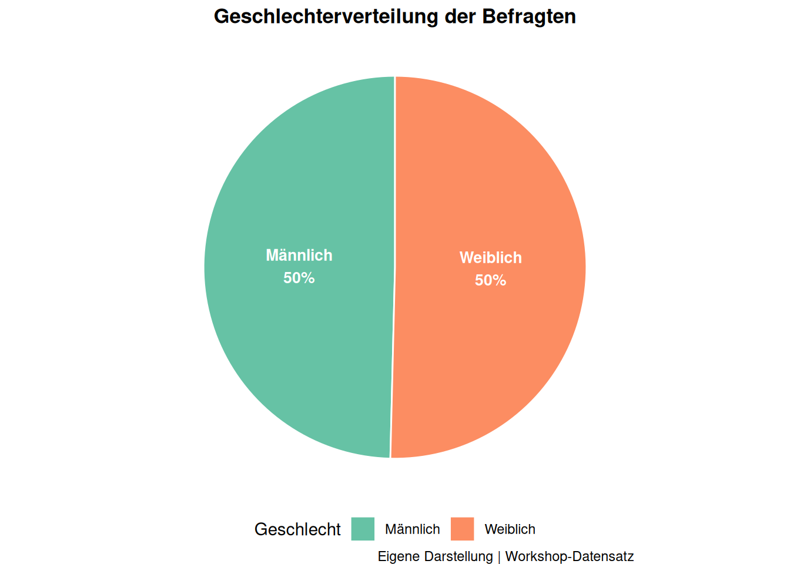
WarningWann lieber kein Tortendiagramm?
- bei mehr als 4–5 Kategorien → Segmente werden zu schmal
- wenn genaue Werte verglichen werden sollen → Balkendiagramm ist besser
- bei ähnlich großen Anteilen → kaum unterscheidbar
👉 Als Faustregel: Wenn du ein Tortendiagramm machen möchtest, überleg zuerst, ob ein geom_bar(position = "fill") nicht klarer wäre.
🖌️ Layer 7: Theme & Styling
Themes steuern das Hintergrunddesign einer Grafik:
Gitterlinien, Hintergrundfarbe, Schriften, Achsenlinien.
ggplot2 bringt bereits mehrere fertige Themes mit.
Fertige Themes
p <- ggplot(data = df, aes(x = geschlecht, y = distress, fill = geschlecht)) +
geom_boxplot() +
labs(title = "Distress nach Geschlecht", x = "Geschlecht", y = "Distress-Score")p + theme_gray()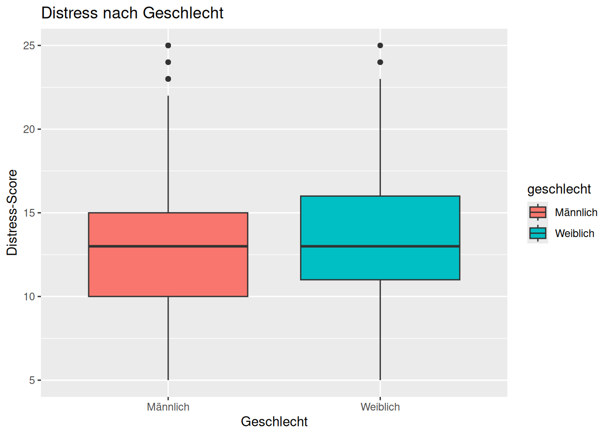
p + theme_bw()p + theme_minimal()p + theme_classic()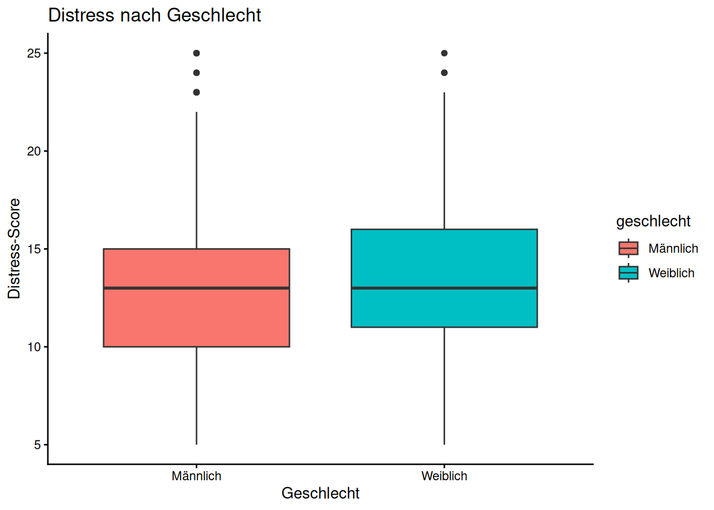
p + theme_void()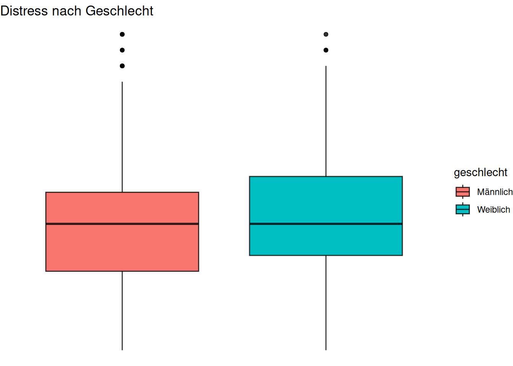
TipEmpfehlung für wissenschaftliche Grafiken
theme_minimal() oder theme_bw() sind häufig die beste Wahl für Publikationen – sie sind schlicht, gut lesbar und lenken nicht vom Inhalt ab.
theme() – Eigene Anpassungen
Mit theme() kannst du einzelne Elemente gezielt anpassen:
p +
theme_minimal() +
theme(
plot.title = element_text(size = 14, face = "bold"),
axis.title = element_text(size = 11),
axis.text = element_text(size = 10),
legend.position = "bottom"
)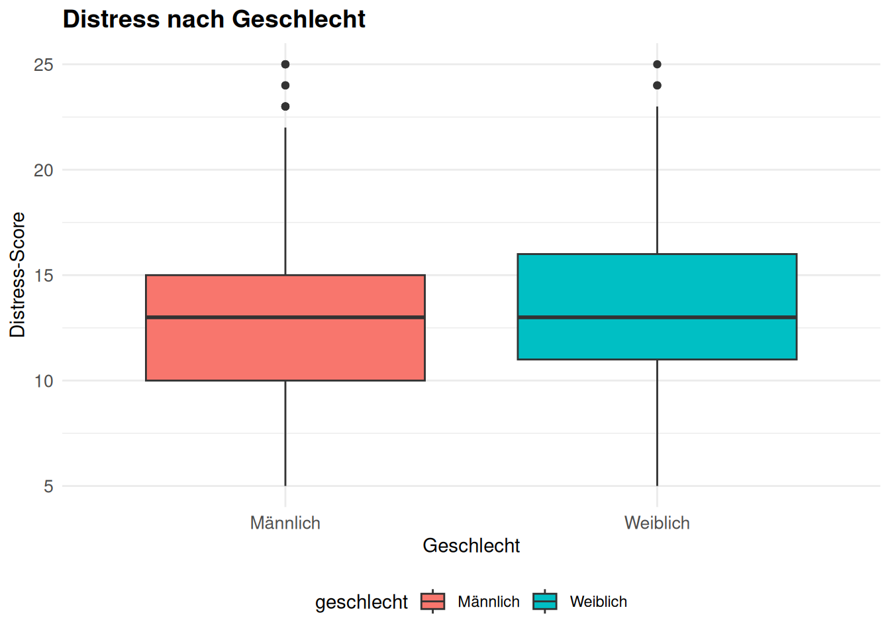
NoteWichtige
theme()-Elemente
| Element | Funktion |
|---|---|
plot.title |
Haupttitel |
plot.subtitle |
Untertitel |
axis.title |
Achsentitel (beide) |
axis.text |
Achsenbeschriftungen |
legend.position |
"right", "left", "bottom", "none" |
panel.grid |
Gitterlinien |
plot.background |
Hintergrund der gesamten Grafik |
Diese werden mit element_text(), element_line(), element_rect() oder element_blank() konfiguriert.
Eigenes Theme definieren
In größeren Projekten lohnt es sich, ein eigenes Standard-Theme einmal zu definieren und für alle Grafiken wiederzuverwenden:
mein_theme <- theme_minimal() +
theme(
plot.title = element_text(size = 14, face = "bold", color = "#1a1a2e"),
plot.subtitle = element_text(size = 11, color = "#555555"),
axis.title = element_text(size = 10, color = "#333333"),
axis.text = element_text(size = 9),
legend.position = "bottom",
panel.grid.minor = element_blank()
)
p + mein_theme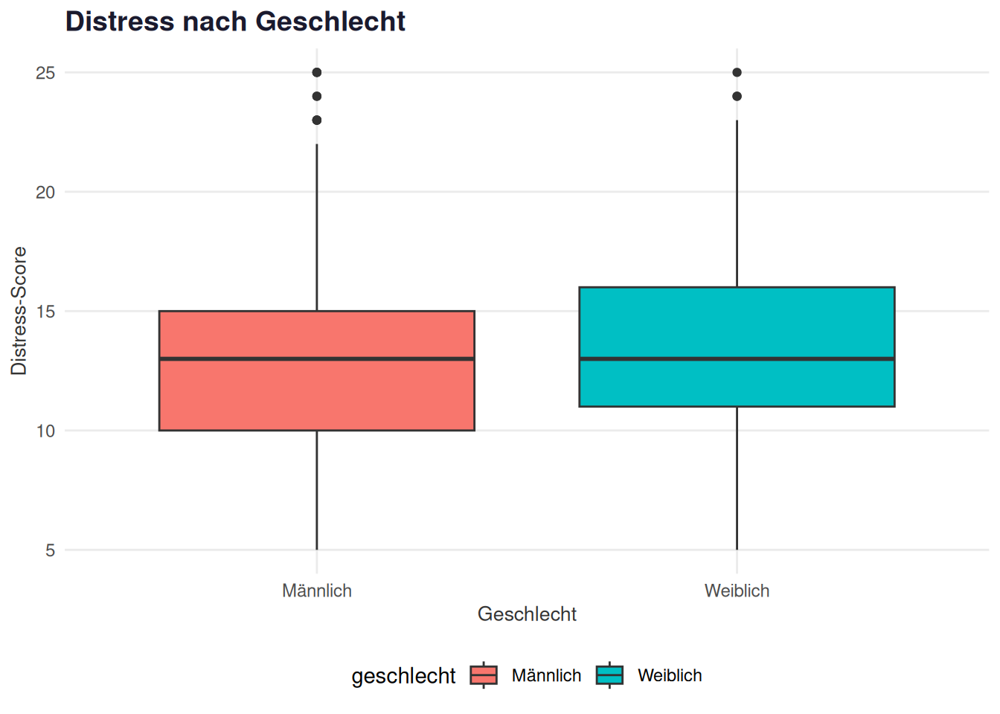
Farbpaletten
RColorBrewer
library(RColorBrewer)
p + scale_fill_brewer(palette = "Set2") + mein_theme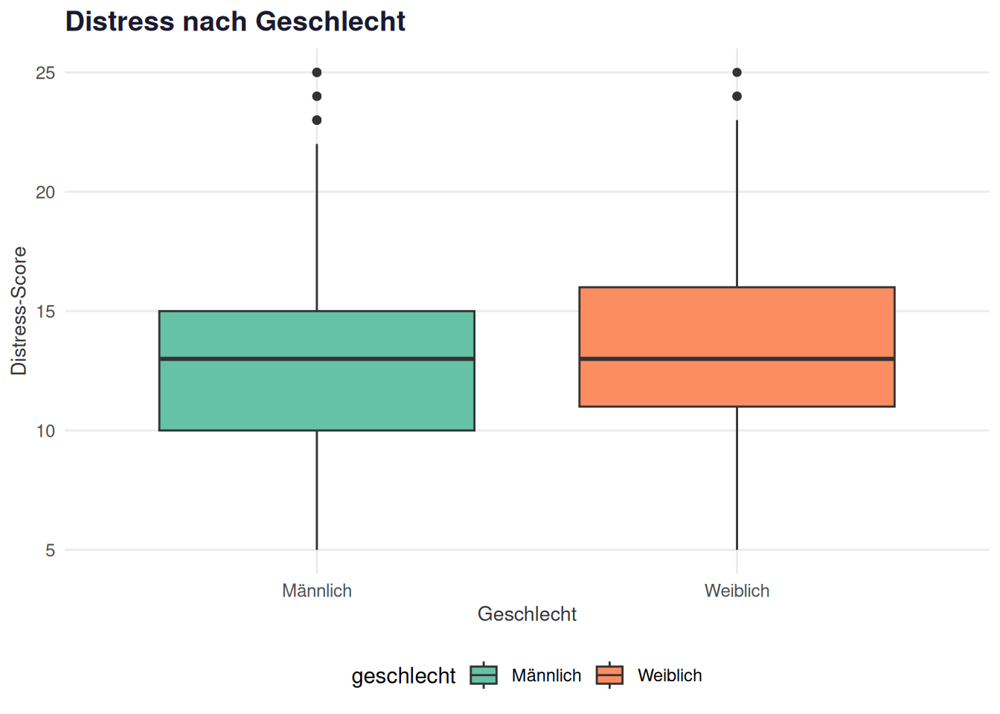
NotePalettentypen
- Qualitativ (kategoriale Variablen):
"Set1","Set2","Dark2","Pastel1" - Sequenziell (geordnete Werte):
"Blues","Greens","YlOrRd" - Divergierend (Werte mit Mitte):
"RdBu","PiYG","BrBG"
viridis – farbenblind-freundlich
ggplot(data = df,aes(x = age, y = distress, color = soz_u)) +
geom_point(alpha = 0.5) +
scale_color_viridis_c(option = "plasma") +
labs(
title = "Alter, Distress und Soziale Ungleichheit",
x = "Alter",
y = "Distress",
color = "Soz. Ungleichheit"
) +
mein_theme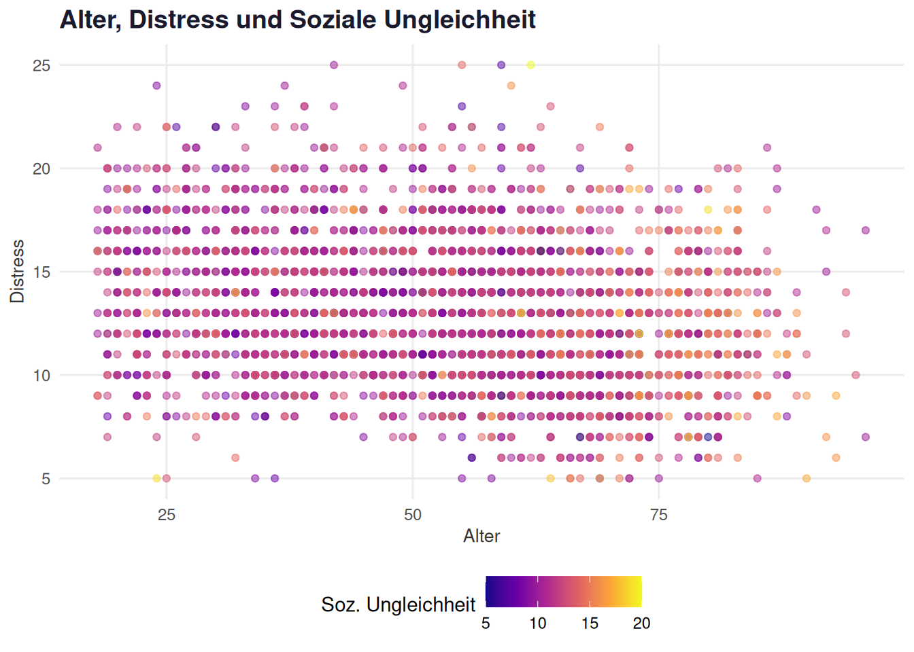
Noteviridis-Varianten
Für diskrete Variablen: scale_color_viridis_d() / scale_fill_viridis_d()
Für kontinuierliche Variablen: scale_color_viridis_c() / scale_fill_viridis_c()
Optionen: "viridis", "plasma", "magma", "inferno", "cividis"
Manuelle Farbpalette
eigene_farben <- c("Männlich" = "#2196F3", "Weiblich" = "#E91E63", "Divers" = "#4CAF50")
p + scale_fill_manual(values = eigene_farben) + mein_theme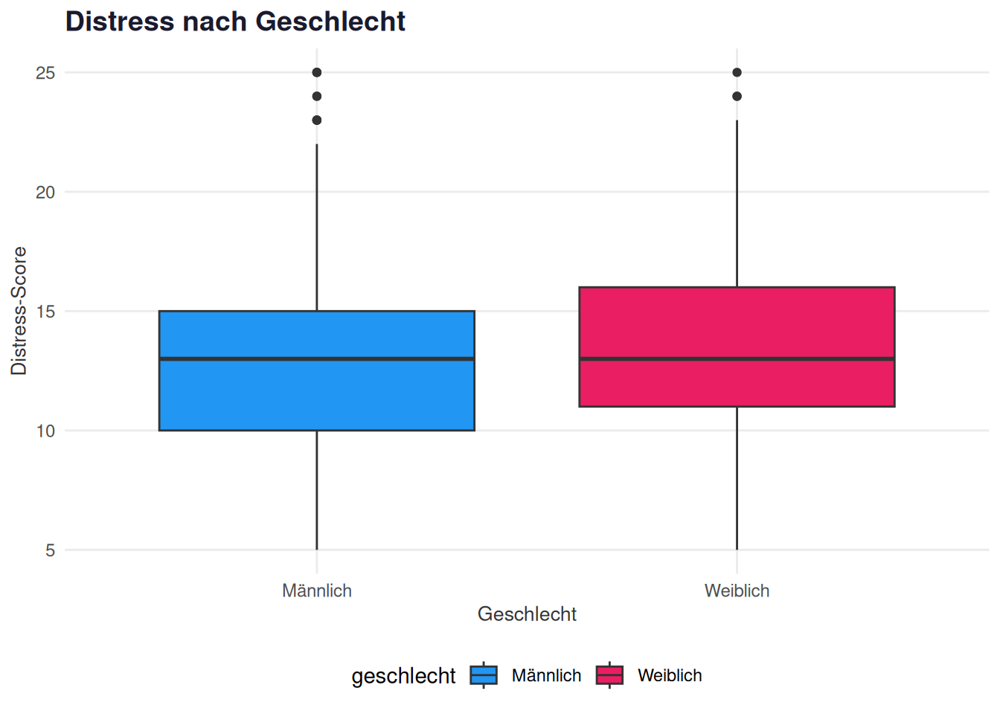
Übung
Gestalte einen eigenen Plot vollständig:
- Erstelle einen Boxplot von
lebenszufnachwohnort(mitfill = wohnort) - Erstelle ein eigenes
mein_themeund wende es an - Nutze eine Farbpalette deiner Wahl (
scale_fill_breweroderscale_fill_viridis_d) - Passe den Titel auf Schriftgröße 14 und fett an
- Blende die Legende mit
legend.position = "none"aus (da die x-Achse bereits ausreichend informiert)
TipLösung
ggplot(data = df |> filter(!is.na(wohnort) & !is.na(lebenszuf)),
aes(x = wohnort, y = lebenszuf, fill = wohnort)) +
geom_boxplot(alpha = 0.8, outlier.shape = NA) +
geom_jitter(width = 0.2, alpha = 0.15, size = 0.8) +
scale_fill_brewer(palette = "Set2") +
labs(
title = "Lebenszufriedenheit nach Wohnorttyp",
x = NULL,
y = "Lebenszufriedenheit (0–10)",
caption = "Eigene Darstellung | Workshop-Datensatz"
) +
mein_theme +
theme(
plot.title = element_text(size = 14, face = "bold"),
legend.position = "none",
axis.text.x = element_text(angle = 15, hjust = 1)
)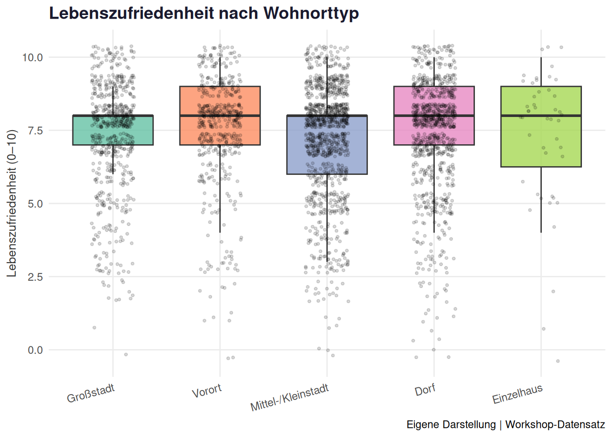
patchwork – Plots kombinieren
Manchmal möchte man mehrere verschiedene Grafiken nebeneinander oder untereinander in einer Abbildung zeigen – z. B. in einer Publikation oder einem Bericht.
Dafür nutzen wir das Paket patchwork.
# install.packages("patchwork")
library(patchwork)Grundlegende Syntax
Mit patchwork werden Plots mit +, / und | kombiniert:
p1 <- ggplot(data = df, aes(x = distress)) +
geom_histogram(binwidth = 2, fill = "steelblue", color = "white") +
labs(title = "Verteilung Distress", x = "Distress-Score", y = "Häufigkeit") +
mein_theme
p2 <- ggplot(data = df, aes(x = geschlecht, y = distress, fill = geschlecht)) +
geom_boxplot() +
scale_fill_brewer(palette = "Set2") +
labs(title = "Distress nach Geschlecht", x = NULL, y = "Distress-Score") +
mein_theme +
theme(legend.position = "none")
# Nebeneinander:
p1 | p2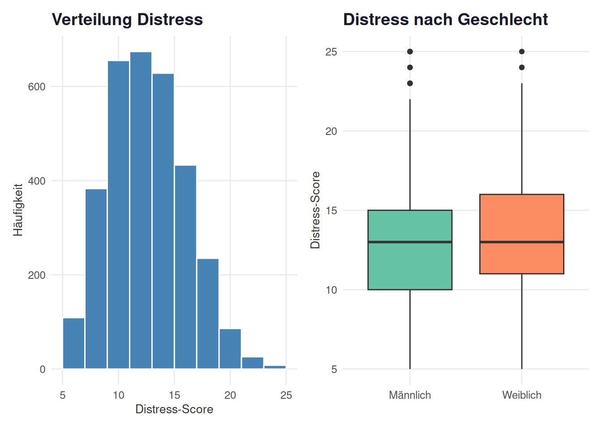
# Untereinander:
p1 / p2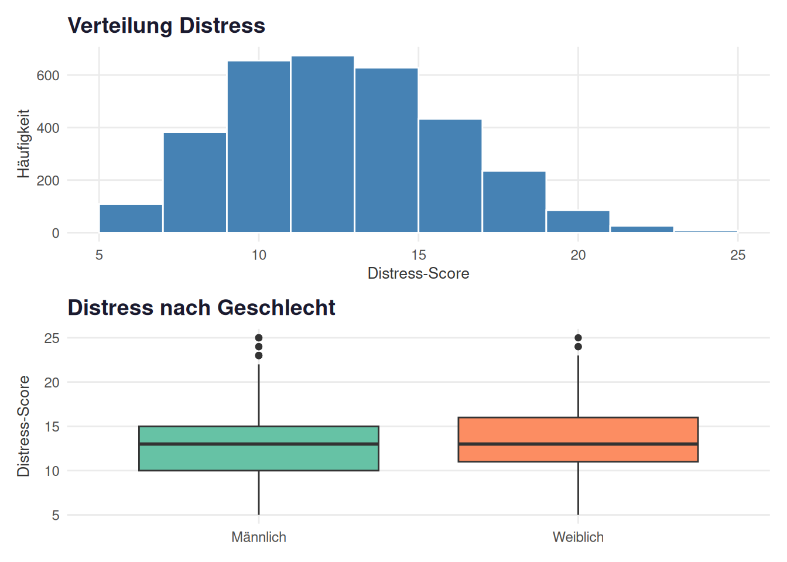
Layouts & Anmerkungen
p3 <- ggplot(data = df, aes(x = distress, y = soz_u)) +
geom_point(alpha = 0.3, color = "steelblue") +
geom_smooth(method = "lm", se = FALSE, color = "darkred") +
labs(title = "Distress & Soziale Ungleichheit", x = "Distress", y = "Soz. Ungleichheit") +
mein_theme
# Kombiniertes Layout: oben zwei, unten einer
(p1 | p2) / p3 +
plot_annotation(
title = "Abbildung 1: Überblick Distress und Soziale Ungleichheit",
caption = "Eigene Darstellung | Workshop-Datensatz",
theme = theme(plot.title = element_text(size = 14, face = "bold"))
)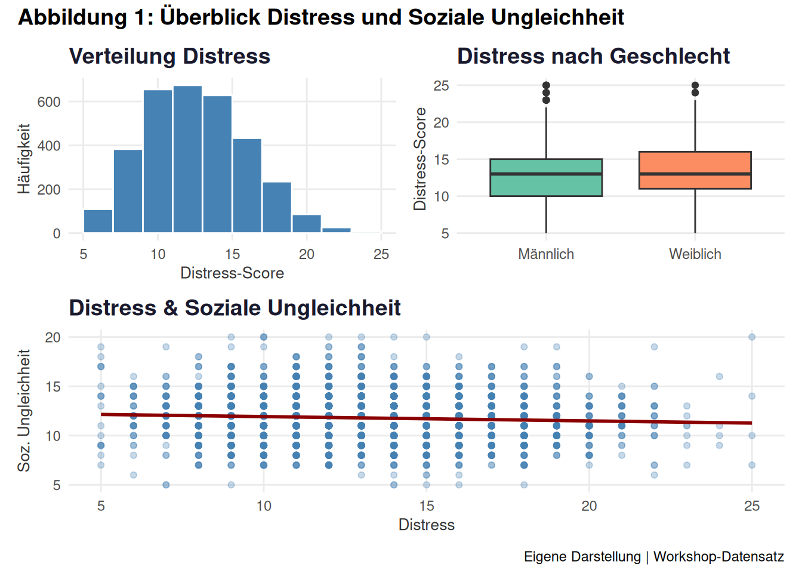
Notepatchwork – Kurzreferenz
| Operator | Bedeutung |
|---|---|
p1 | p2 |
nebeneinander |
p1 / p2 |
untereinander |
(p1 | p2) / p3 |
kombinierte Layouts |
plot_annotation() |
Gesamttitel, Caption |
plot_layout(widths = c(2, 1)) |
Verhältnis der Breiten |
Übung
Erstelle eine kombinierte Abbildung mit drei Plots:
- Histogramm von
lebenszuf - Boxplot von
lebenszufnachgebiet(Ost/West) - Scatter-Plot von
ageundlebenszuf
Kombiniere sie sinnvoll mit patchwork und füge einen Gesamttitel via plot_annotation() hinzu.
TipLösung
pa <- ggplot(data = df, aes(x = lebenszuf)) +
geom_histogram(binwidth = 1, fill = "#2196F3", color = "white") +
labs(title = "Verteilung", x = "Lebenszufriedenheit (0–10)", y = "Häufigkeit") +
mein_theme
pb <- ggplot(data = df, aes(x = gebiet, y = lebenszuf, fill = gebiet)) +
geom_boxplot() +
scale_fill_brewer(palette = "Set2") +
labs(title = "Ost vs. West", x = NULL, y = NULL) +
mein_theme +
theme(legend.position = "none")
pc <- ggplot(data = df, aes(x = age, y = lebenszuf)) +
geom_point(alpha = 0.3, color = "#E91E63") +
geom_smooth(method = "lm", se = FALSE, color = "#333333") +
labs(title = "Alter & Lebenszufriedenheit", x = "Alter", y = "Lebenszufriedenheit") +
mein_theme
(pa | pb) / pc +
plot_annotation(
title = "Abbildung: Lebenszufriedenheit im Überblick",
caption = "Eigene Darstellung | Workshop-Datensatz",
theme = theme(plot.title = element_text(size = 13, face = "bold"))
)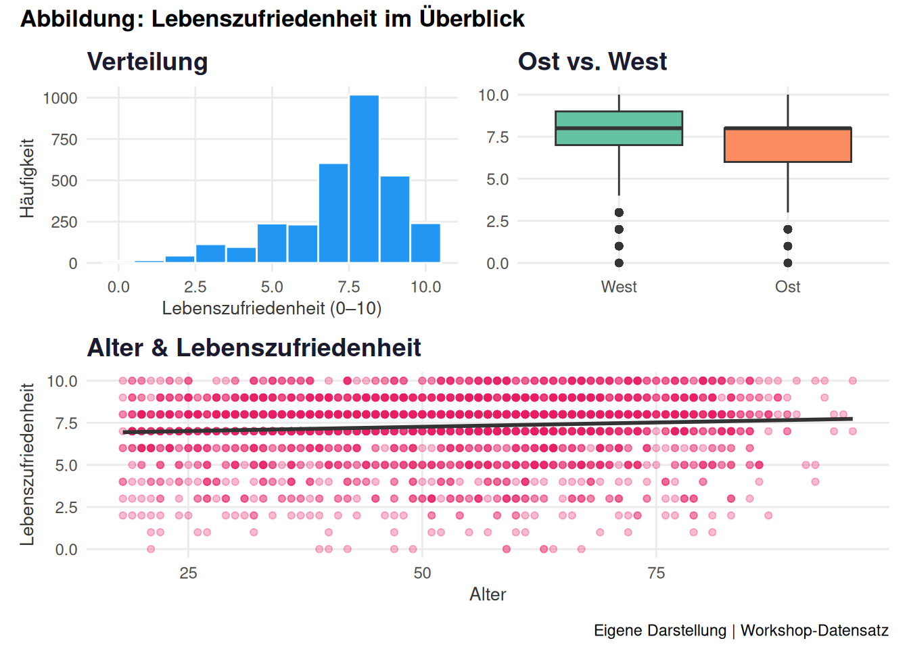
Grafiken exportieren
Fertige Grafiken lassen sich mit ggsave() als PNG, PDF oder SVG speichern.
# Letzten Plot speichern:
ggsave("output/mein_plot.png", width = 8, height = 5, dpi = 300)
# Bestimmten Plot speichern:
ggsave("output/boxplot_distress.pdf", plot = p2, width = 6, height = 4)
NoteWichtige Argumente von
ggsave()
| Argument | Beschreibung |
|---|---|
filename |
Pfad und Dateiname (Format durch Endung) |
plot |
welcher Plot (Standard: letzter Plot) |
width |
Breite in Zoll (Standard: 7) |
height |
Höhe in Zoll (Standard: 5) |
dpi |
Auflösung – 300 für Druck, 150 für Web |
TipEmpfehlungen für den Export
- Für Hausarbeiten / Berichte:
dpi = 300, Format.pngoder.pdf - Für Präsentationen:
dpi = 150, breiteres Format (z. B.width = 10, height = 6) - Für Veröffentlichungen:
.pdfoder.svg– verlustfreie Vektorgrafiken
Mini-Projekt
Zum Abschluss des Workshops erstellst du eine vollständige, publikationsreife Abbildung –
von der Datenvorbereitung bis zum Export.
Zielsetzung
Am Ende dieses Mini-Projekts habt ihr:
- mindestens drei verschiedene Grafiken erstellt
- Aesthetics, Themes und Farbpaletten angewendet
- die Plots mit
patchworkzu einer kombinierten Abbildung zusammengeführt - einen Gesamttitel und Caption hinzugefügt
- die Abbildung als Datei exportiert
Aufgabenstellung
Schritt 1: Fragestellung wählen
Wählt eine inhaltliche Frage aus dem Datensatz, z. B.:
- Unterscheiden sich Distress oder Soziale Ungleichheit nach Bildung, Geschlecht oder Wohnort?
- Gibt es einen Zusammenhang zwischen Alter und Distress, der sich nach Geschlecht unterscheidet?
- Wie verteilt sich eine Variable über verschiedene Gruppen?
👉 Haltet eure Fragestellung kurz als Kommentar im Skript fest.
Schritt 2: Datensatz vorbereiten
Wählt die relevanten Variablen aus und bereitet sie auf:
filter()für fehlende Werte- Faktor-Labels setzen (falls noch nicht geschehen)
- ggf. neue Variablen erstellen (siehe Codebook)
Schritt 3: Drei Grafiken erstellen
Erstellt mindestens drei thematisch zusammenpassende Grafiken:
- mindestens ein Histogramm oder Boxplot
- mindestens ein Streudiagramm (mit
geom_smooth, wenn sinnvoll) - mindestens ein Balkendiagramm oder eine facettierte Grafik
Anforderungen an jede Grafik:
labs()mit Titel, Achsenbeschriftungen und Caption- eigenes
mein_themeangewendet - sinnvolle Farbpalette gewählt
Schritt 4: Plots kombinieren
Kombiniert eure drei Grafiken mit patchwork:
- wählt ein sinnvolles Layout (
|,/, oder kombiniert) - fügt einen Gesamttitel mit
plot_annotation()hinzu
Schritt 5: Exportieren
Speichert eure kombinierte Abbildung mit ggsave():
- Format: PNG oder PDF
- Auflösung:
dpi = 300 - Datei im Ordner
output/
Checkliste
Am Ende sollten bei euch vorhanden sein:
- drei Einzelgrafiken (als Objekte
p1,p2,p3gespeichert) - eine kombinierte
patchwork-Abbildung mit Gesamttitel - eine exportierte Datei in
output/ - ein dokumentiertes Skript mit Kommentaren
TipTipps für das Mini-Projekt
- Fangt einfach an – erst der Grundplot, dann das Styling
- Greift auf euer
mein_theme-Objekt zurück - Beim Export: erst
ggsave()testen, dann die Auflösung hochsetzen - Nutzt
facet_wrap()wenn ihr viele Gruppen vergleichen wollt
Recap Workshop
NoteRecap beider Tage
- Warum Visualisierung? Anscombe-Quartett, Exploration, Kommunikation, Qualitätskontrolle
- Was ist ggplot2? Grammar of Graphics, schichtweiser Aufbau
- 🗂️ Data:
ggplot(data = df)– Datenbasis, Pipe in ggplot - 🎨 Aesthetics:
aes(x, y, color, fill, size, shape, alpha)– global vs. lokal, innerhalb vs. außerhalb - 🎨 Aesthetics vertieft:
colorvs.fill,alpha,size,shape - 📐 Geometries:
geom_point(),geom_histogram(),geom_bar(),geom_boxplot(),geom_smooth(),geom_jitter() - Beschriftungen:
labs()mit title, subtitle, x, y, caption, color, fill
- 🔲 Facets:
facet_wrap()undfacet_grid()– Gruppenvergleiche durch Teilgrafiken - 📊 Statistics:
stat_summary()– Mittelwerte und Fehlerbalken direkt in der Grafik - 📏 Coordinates:
coord_cartesian(),coord_flip(),scale_x_log10(),coord_polar()(Tortendiagramm) - 🖌️ Theme: Fertige Themes,
theme()-Anpassungen, eigenes Theme-Objekt, Farbpaletten - patchwork:
|,/,plot_annotation()– mehrere Plots kombinieren - Export:
ggsave()mitdpi,width,height
Abschluss Tag 2
Herzlichen Glückwunsch – ihr habt jetzt alle Werkzeuge, um mit ggplot2 professionelle, aussagekräftige Grafiken zu erstellen 🎉
Bevor wir abschließen:
👉 Gibt es noch offene Fragen oder Grafiken, die wir gemeinsam anschauen sollen?
NoteMerksatz zum Abschluss
Eine gute Grafik zeigt nicht alles auf einmal –
sie zeigt genau das, was wichtig ist.
Weiterführende Ressourcen
- 📘 ggplot2-Dokumentation
- 📘 R for Data Science – Visualization
- 🎨 ColorBrewer2.org – Paletten interaktiv auswählen
- 🎨 ggplot2 extensions – Überblick über Erweiterungspakete